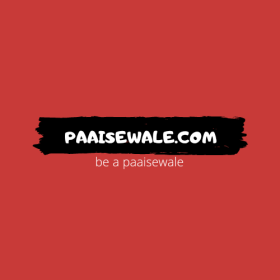

Professional Work Experience
-
April 2023 - June 2023

Finance Intern
Telangana State Road Transport Corporation (Logistics), Hyderabad, Telangana
Achievements/Tasks -
- Conducted comprehensive financial analysis, evaluating earnings, expenditures, and cost-benefit analysis for TSRTC.
- Utilized quantitative methods to analyze primary data and provide insights for optimizing incentive programs.
- Proposed alternative solutions for the existing overtime incentive program, aiming for a potential 15% cost reduction.
- Managed and analyzed budgets for the Ranga Reddy district, ensuring effective allocation of resources and identifying areas for cost reduction.
- Developed and implemented strategies for the conversion of special off services, leading to potential cost reductions and increased profitability.
- Evaluated and compared incentive programs to improve overall financial performance and cost-effectiveness.
- Analyzed the impact of occupancy ratios on earnings and provided recommendations to maximize bus occupancy and increase revenue.
-
July 2020 - June 2022
Self-Employed Consultant
Paaisewale Consultancy, Bhilai, Chhattisgarh
Achievements/Tasks -
- Conducted one-on-one financial consultation, demystifying financial complexities for clients.
- Offered tailored advice for safe entry into markets, focusing on diversified portfolios spanning various sectors.
- Developed sector-specific investment guides to assist clients in making informed decisions about portfolio diversification.
- Engineered investment portfolios that prioritize safety and diversity, helping clients mitigate risk while maximizing returns.